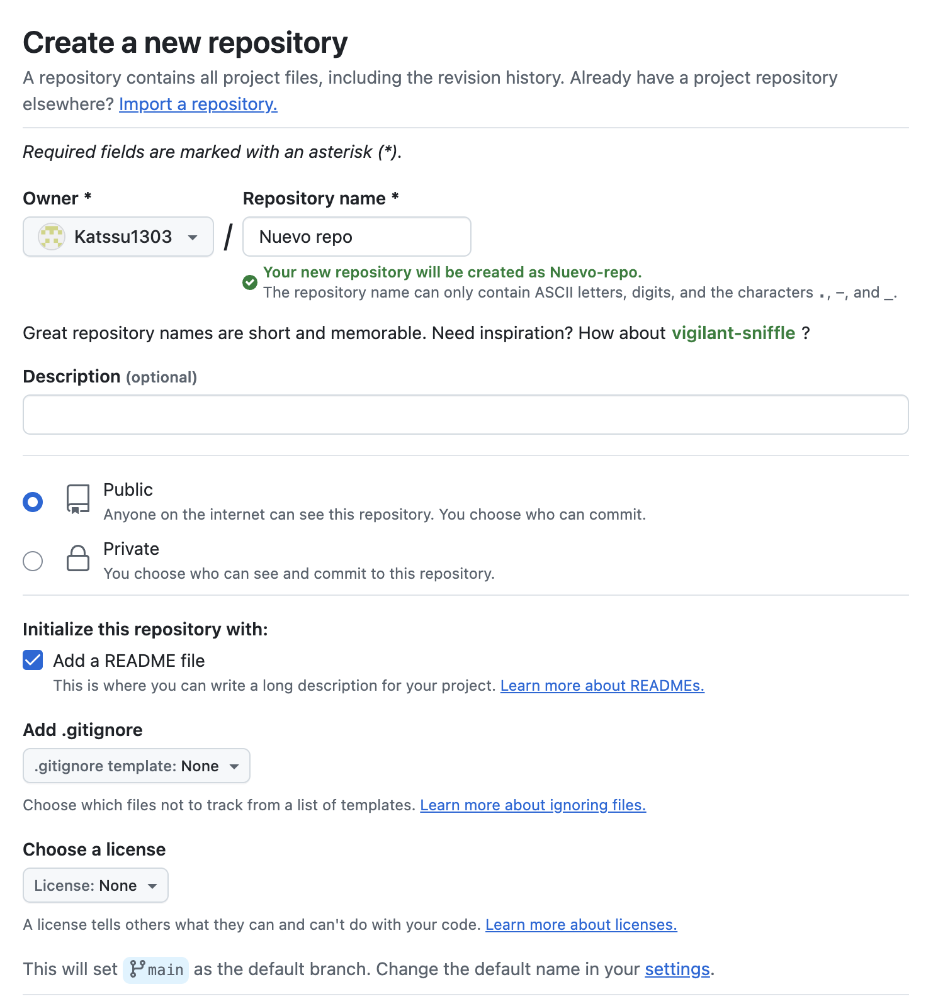
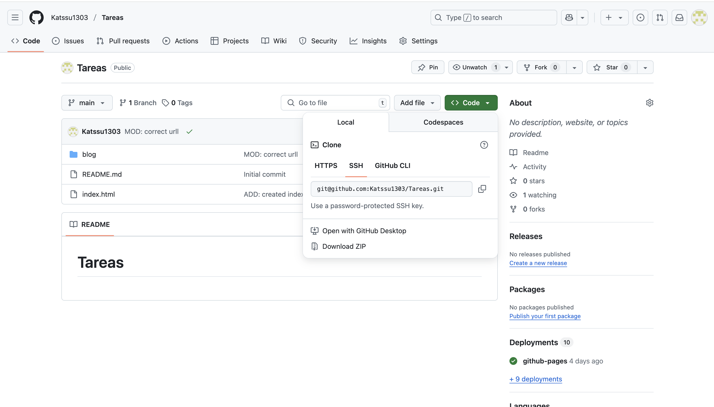
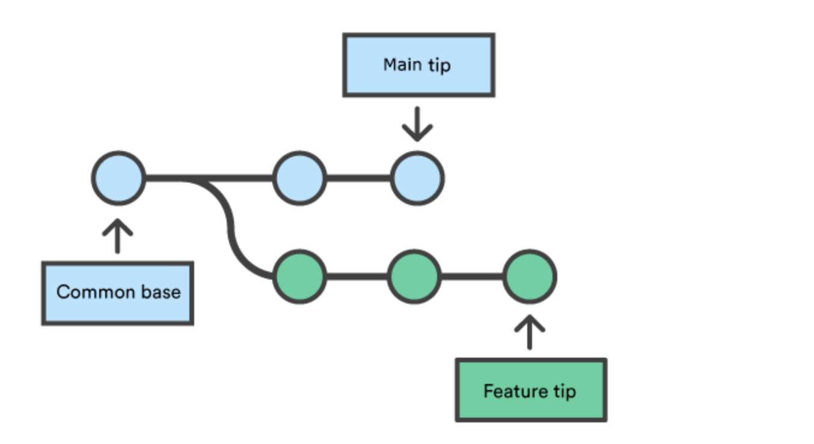
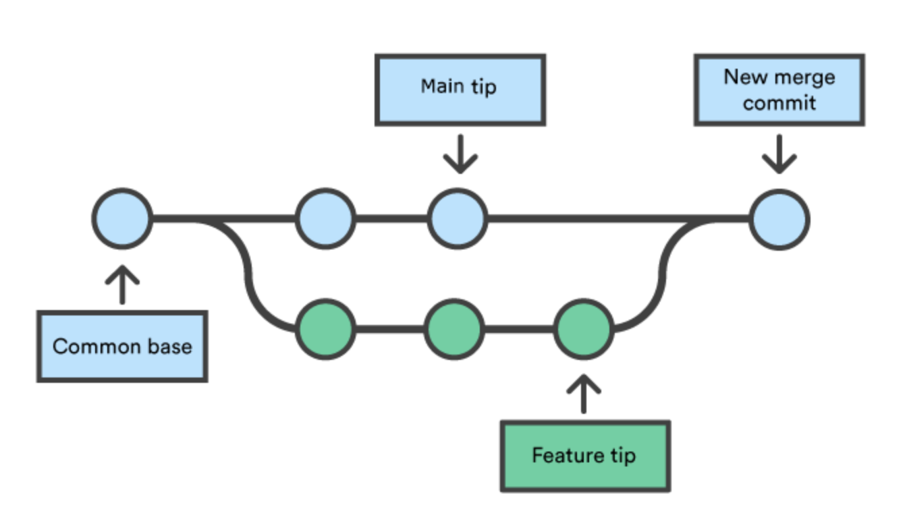

Flujo de trabajo de git y github
El flujo de trabajo en git y github es bien estructurado, te permite trabajar en paralelo, mantener el control de versiones y los cambios que se realizan en las mismas, además de combinar versiones de diversas personas de forma organizada
Crear el primer repositorio:
Dentro de tu cuenta de Github en la parte de Dashboard, se debe seleccionar la pesatña de repositorios, posteriormente en el icono verde "New" para crear un nuevo repositorio. Finalmente agrega todas las configuraciones necesarias.
Clonar un repositorio:
Cuando ya existe tu repositorio en Github, se debe clonar para que sea local. Se recomienda usar SSH para clonar el repositorio. Se usa el comando "git clone y se pega el url"
Flujo en ramas
Este diagrama ejemplifica cómo se pueden crear ramas para desarrollar nuevas funciones sin afectar el trabajo que se mantiene en la rama principal. Hay 3 partes:
- Common base -> Punto en común del que parten todas las ramas.
- Main tip -> Último commit en la rama principal.
- Feature tip -> Último commit en una rama de desarrollo de una nueva funcionalidad.
Crear una rama:
La idea de crear una nueva rama es con la finalidad de trabajar en el código sin alterar el principal, ya sea para trabajar en una nueva funcionalidad o corregir errores. Se usa el comando "git checkout -b nombre de la rama". Dentro de esta rama creas o modificas el código (Editas archivos, agregas funcionalidades, corriges errores, etc).
Dentro de esta rama se debe seguir el mismo proceso como si trabajaras directamente en el principal, es decir:
- Agregar los archivos modificados al staging area con un "git add ." o "git add nombre del archivo".
- Guardar los cambios con un commit con el comando "git commit -m "Descripción"".
- Enviar los cambios al repositorio remoto, usando "git push origin main".
Sincronizar con el repositorio remoto:
Antes de subir los cambios, es necesario asegurarnos de estar actualizado con el repositorio remoto, por ello se utiliza el comando "git pull origin main ".
Subir la rama al repositorio remoto:
Para subir la rama al repositorio remoto se utiliza el comando "git push origin nombre de la rama".
Crear un Pull Request:
Se compara la rama con la rama main y se solicita que se revisen tus cambios.
Combinación de ramas:
Despúes de que se ha completado la modificación, la rama feature puede fusionarse (merge) con la rama main. Lo que genera un nuevo commit de merge, que mantiene el historial de ambas ramas y los une. Se usa el comando "git merge nombre de la rama".
